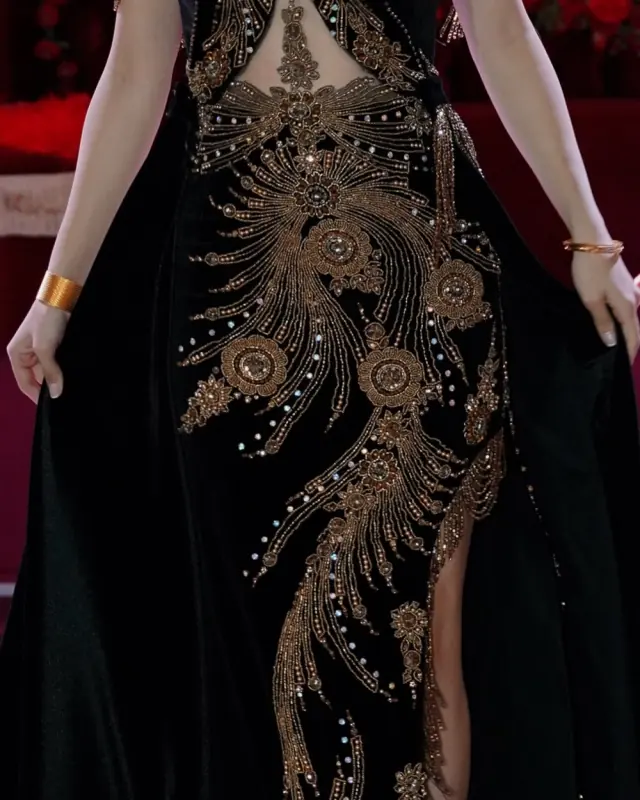
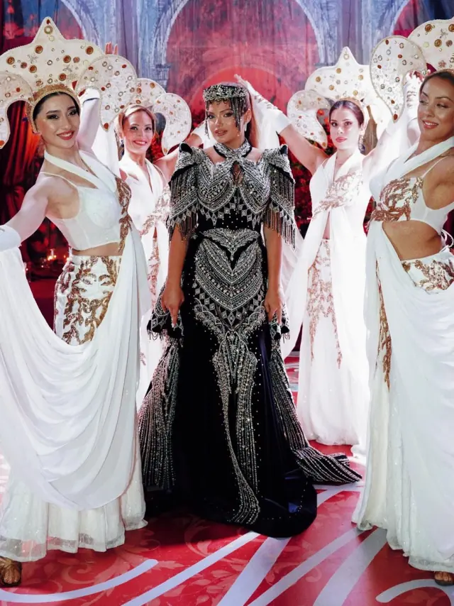
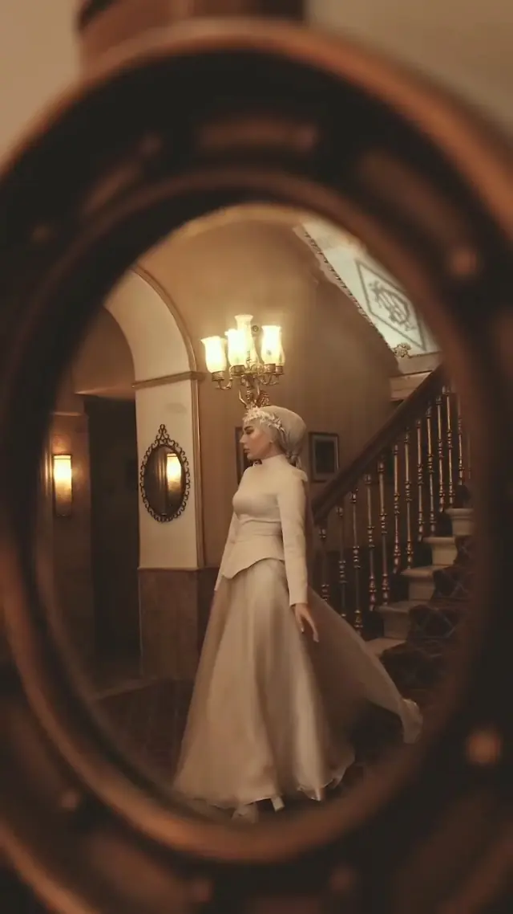
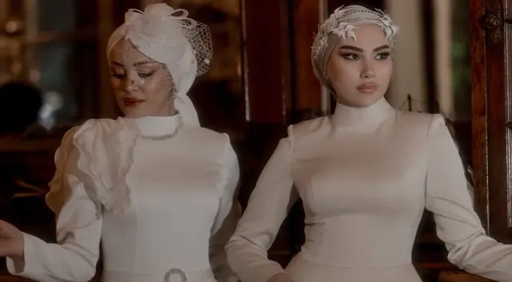

Kına · Nikâh · Düğün · After
Zarafet, detaylarda saklı.
Gelinlik, kına kaftanı ve davet elbiseleri. Ümraniye'deki atölyemizde satış, kiralama ve özel dikim.
Bir gelinin geceleri
Her geceye bir elbise
-
 I
INişan ve nikâh
Sipariş üzerine, 36-40 beden, farklı renk seçenekleri.
-

-
 III
IIIDüğün
Tesettür ve açık gelinlik. Satılık, kiralık, özel dikim.
-
 IV
IVAfter
Pul, tüy ve ışıltı. Kiralık modellerle gecenin sonu.
Özel elişleme
Işığa tutun
Taş, boncuk ve sırma, kadifenin üzerine tek tek. Fotoğraf bir yere kadar anlatır; ışıltıyı showroomda, ışığın altında görün.



 Bir kaftanın hikâyesi
Lacivert kadife
“Kınanın zarafeti, Büşra gelinimizin güzelliğiyle bambaşka.”
Hikâyeyi okuyun
Bir kaftanın hikâyesi
Lacivert kadife
“Kınanın zarafeti, Büşra gelinimizin güzelliğiyle bambaşka.”
Hikâyeyi okuyun
Gelinlerimiz
Sizden gelenler




Atölyeden size özel
Her tasarım kendi hikâyesiyle başlar
Kumaş seçimi, prova süreci ve ince işçilikle yalnızca size ait bir görünüm ortaya çıkar.
- 01Görüşme
- 02Ölçü ve kumaş
- 03Prova
- 04Teslim
- Satılık
- Gelinlik, nişan ve nikâh
- Kiralık
- Kaftan, bindallı, after
- Özel dikim
- Size özel tasarım
- Online dikim
- İstanbul dışına da
Ümraniye, İstanbul
Showroom randevusu
Gecenizin tarihini yazın; modelleri, renkleri ve kiralama seçeneklerini sizin için hazırlayalım. Açık adresi mesajla paylaşıyoruz.
0538 860 11 72